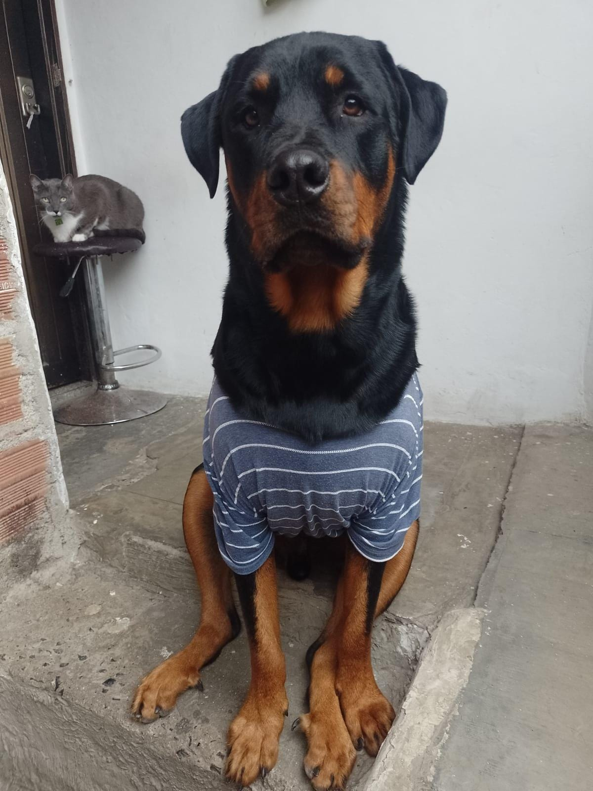
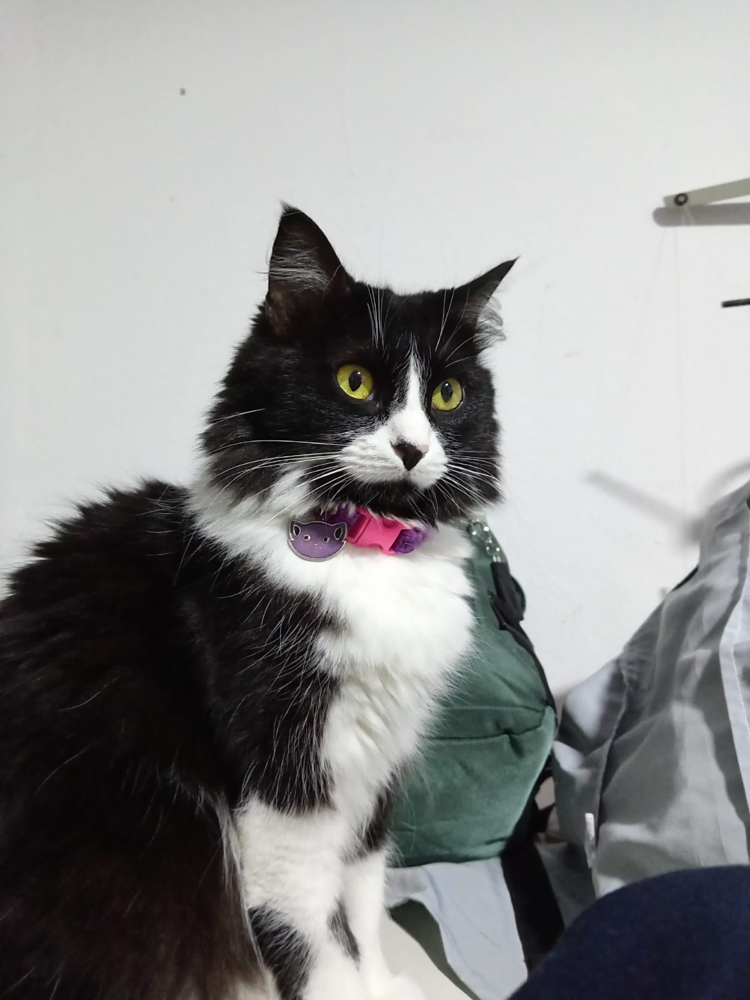
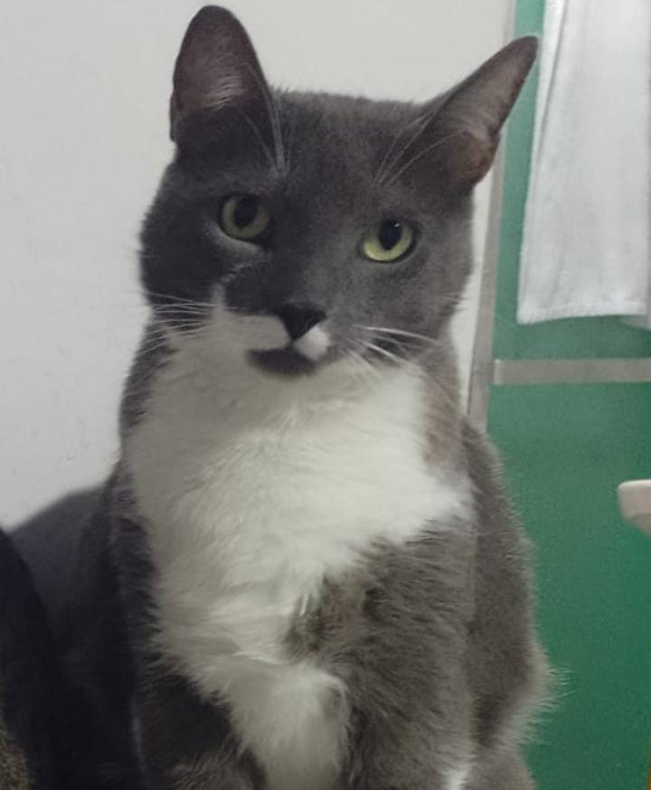

Casos de Rescate: Historias que Esperan un Final Feliz
Conoce a los perros y gatos que actualmente están bajo nuestro cuidado. Cada uno de ellos necesita ayuda para completar su tratamiento y encontrar un hogar.
Animales Disponibles para Apadrinar o Adoptar
| Nombre | Especie/Raza | Edad Aprox. | Historia y Estado | Acción Urgente |
|---|---|---|---|---|
| Kike | Perro / Rottweiler | 3 años | Rescatado con fractura de cadera. Necesita cirugía. | Donar |
| Chirimoya | Gata / Criolla | 1 año | Encontrada con desnutrición. Lista para adoptar. | Donar |
| Serafín | Gato / Criollo | 7 años | Requiere vacunas finales y desparasitación. | Donar |
  
Nuestros Proyectos y Cómo Puedes Financiar Nuestra Misión
Programas de Apoyo (Proyectos/Servicios)
1. Rescate y Primeros Auxilios
Este programa cubre los costos inmediatos de rescate, transporte y la atención de emergencia inicial que salva la vida de los animales más vulnerables. Es la primera y más crítica fase.
Necesidad: Ambulancia, gasolina, medicinas de emergencia.
2. Cero Abandono (Esterilización Masiva)
La solución a largo plazo al problema de la sobrepoblación. Realizamos jornadas gratuitas y de bajo costo en comunidades para prevenir el nacimiento de miles de animales destinados a vivir en la calle.
Necesidad: Insumos quirúrgicos, honorarios veterinarios.
3. Adopción con Seguimiento
No es solo encontrar un hogar, es asegurar un "para siempre". Este servicio incluye la evaluación de las familias, el contrato legal de adopción y el seguimiento post-adopción durante 1 año.
Necesidad: Materiales de concientización, visitas de seguimiento, transporte.